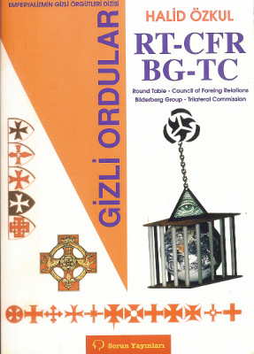

Türkiye’de, dünyanın mazlum halkalarının emeklerini gasp edip, özgürlükleri baskı altına alan kapitalist “modern/çağdaş kölelik”in, bunu hangi taktiklerle nasıl başardığının “perde arkası”nı kurcalayan, bu konuyu 1961’den itibaren bir disiplin içinde sorgulamaya başlayan, “tek kişilik” bir araştırma merkezi gibi çalışan ilk kişi şüphesiz
Kemalist-devrimci Em. Kur. Yb. Talat Turhan’dır.
Halid Özkul, Aralık 2005